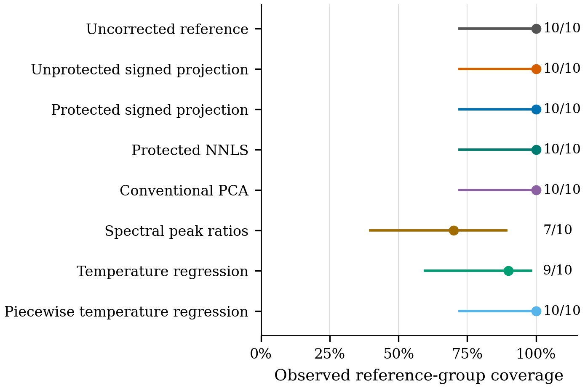
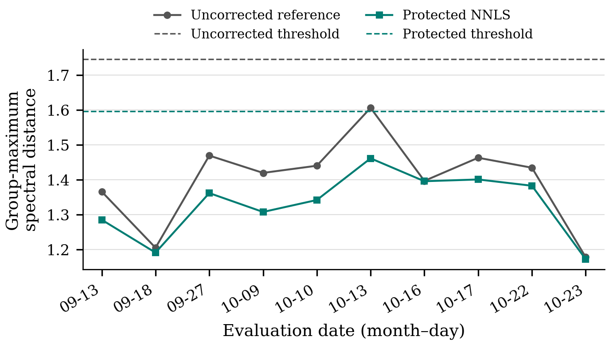
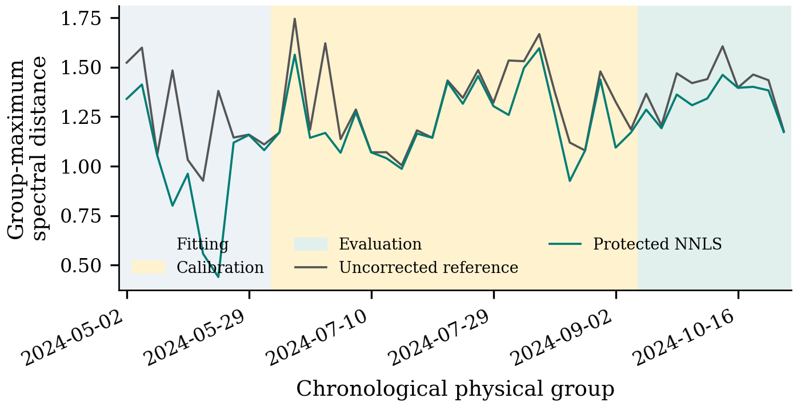
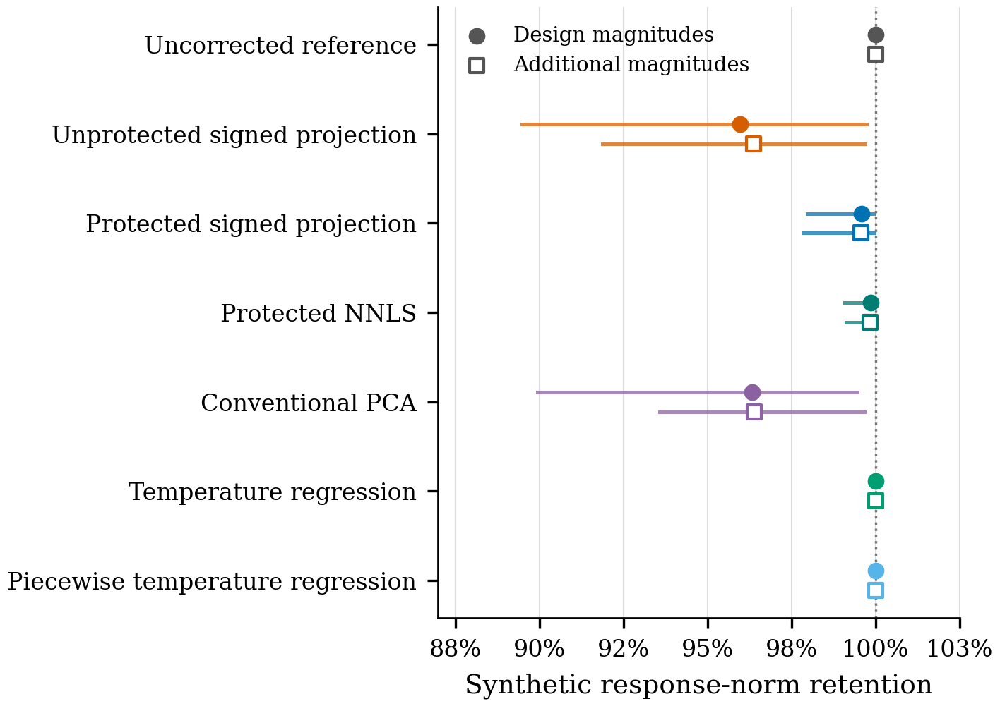
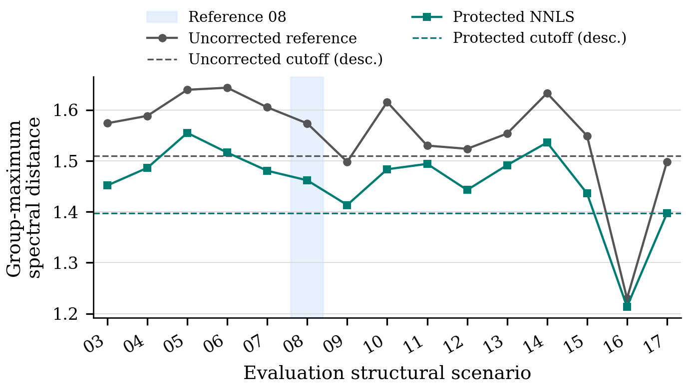
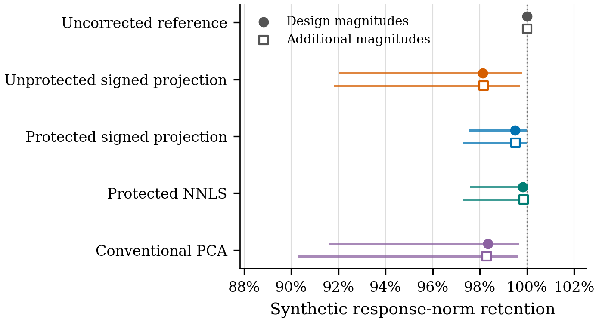
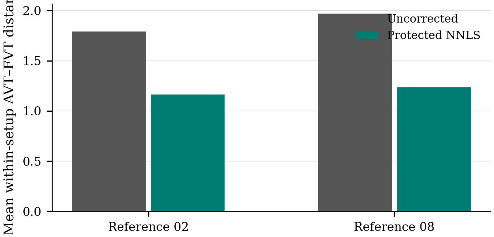

Only newly computed evidence is shown here. Archived evidence remains separate. Unavailable analyses are reported explicitly. Score contraction and synthetic retention are not proof of damage detection. Table titles are placed above tables and figure captions below figures. Figure numbering is a working catalogue; renumber all items and citations consistently when selecting material for the final paper. The final manuscript must be checked in the official AICSET template and within its page limit.
Table 1. Physical-group partitions used in the new analysis.
| Cohort | Partition | Physical groups | Acquisitions | Date range (UTC) |
|---|---|---|---|---|
| OpenLab-2024 | Fitting | 10 | 180 | 02 May 2024 to 30 May 2024 |
| OpenLab-2024 | Calibration | 24 | 172 | 03 Jun 2024 to 05 Sep 2024 |
| OpenLab-2024 | Evaluation | 10 | 174 | 13 Sep 2024 to 23 Oct 2024 |
| Z24 progressive-damage tests | Fitting | 1 | 18 | Not used for scenario grouping |
| Z24 progressive-damage tests | Calibration | 1 | 18 | Not used for scenario grouping |
| Z24 progressive-damage tests | Evaluation | 15 | 270 | Not used for scenario grouping |
Counts are physical groups and acquisitions, not independent windows. Dates, ISO weeks and structural scenarios define OpenLab, environmental Z24 and progressive-test groups, respectively.
Table 2. Availability of the analyses and compensation methods.
| Cohort | Method | Availability | Reason |
|---|---|---|---|
| OpenLab-2024 | Uncorrected reference | Calculated | |
| OpenLab-2024 | Unprotected signed projection | Calculated | |
| OpenLab-2024 | Protected signed projection | Calculated | |
| OpenLab-2024 | Protected NNLS | Calculated | |
| OpenLab-2024 | Conventional PCA | Calculated | |
| OpenLab-2024 | Spectral peak ratios | Calculated | |
| OpenLab-2024 | Temperature regression | Calculated | |
| OpenLab-2024 | Piecewise temperature regression | Calculated | |
| Z24 environmental monitoring | All new analyses | Not calculated | Confirmed inputs or metadata were not available in this run. |
| Z24 progressive-damage tests | Uncorrected reference | Calculated | |
| Z24 progressive-damage tests | Unprotected signed projection | Calculated | |
| Z24 progressive-damage tests | Protected signed projection | Calculated | |
| Z24 progressive-damage tests | Protected NNLS | Calculated | |
| Z24 progressive-damage tests | Conventional PCA | Calculated | |
| Z24 progressive-damage tests | Spectral peak ratios | Calculated | |
| Z24 progressive-damage tests | Temperature regression | Not calculated | Not estimable under the frozen protocol: grouped temperature regression requires at least three fitting groups; PDT source01 provides only one |
| Z24 progressive-damage tests | Piecewise temperature regression | Not calculated | Not estimable under the frozen protocol: grouped temperature regression requires at least three fitting groups; PDT source01 provides only one |
An unavailable comparator is not treated as a negative experimental result. A single PDT fitting scenario cannot support group-based cross-validation of a temperature regression.
Table 3. Reference-state evaluation for OpenLab-2024.
| Method | Covered/reference groups | Coverage (%) | Wilson 95% bounds (%) | Alert groups |
|---|---|---|---|---|
| Uncorrected reference | 10/10 | 100 | 72.2–100.0 | 0 |
| Unprotected signed projection | 10/10 | 100 | 72.2–100.0 | 0 |
| Protected signed projection | 10/10 | 100 | 72.2–100.0 | 0 |
| Protected NNLS | 10/10 | 100 | 72.2–100.0 | 0 |
| Conventional PCA | 10/10 | 100 | 72.2–100.0 | 0 |
| Spectral peak ratios | 7/10 | 70 | 39.7–89.2 | 3 |
| Temperature regression | 9/10 | 90 | 59.6–98.2 | 1 |
| Piecewise temperature regression | 10/10 | 100 | 72.2–100.0 | 0 |
Each method uses its own frozen calibration threshold. Calibration-group counts and exact thresholds remain in the source CSV. Wilson bounds are descriptive 95% intervals; independence and exchangeability are not established. Abstain denotes an unsupported finite nominal threshold, not perfect coverage. The frozen calibration includes 27 acquisitions on 5 dates during the documented non-destructive temporary-prop intervention (22 July–2 August 2024; data article section 4.6). Undamaged reference phase does not mean unchanged boundary conditions. These records and thresholds are retained.

Counts are shown to the right. The intervals are descriptive and do not establish prospective validity.

Only evaluation groups are shown. Dashed lines, when present, are method-specific frozen calibration thresholds. Score contraction is a model property and does not by itself establish better monitoring or retained damage sensitivity.

Background shading identifies the frozen partitions. Group sizes and identifiers are exported separately. This is a protocol diagnostic, not a prospective deployment result. The frozen calibration includes 27 acquisitions on 5 dates during the documented non-destructive temporary-prop intervention (22 July–2 August 2024; data article section 4.6). Undamaged reference phase does not mean unchanged boundary conditions. These records and thresholds are retained.
Table 4. Paired evaluation relative to the uncorrected reference for OpenLab-2024.
| Method | Paired groups | Median score reduction (%) | Exploratory 95% bounds (%) |
|---|---|---|---|
| Unprotected signed projection | 10 | 16.8 | 9.29–21.34 |
| Protected signed projection | 10 | 15.8 | 7.66–19.41 |
| Protected NNLS | 10 | 5.07 | 1.15–7.30 |
| Conventional PCA | 10 | 17.5 | 9.95–21.63 |
| Temperature regression | 10 | -2.83 | -11.43–0.20 |
| Piecewise temperature regression | 10 | 0.877 | -5.75–3.20 |
The score-reduction bounds are exploratory paired percentile-bootstrap bounds conditional on the frozen models and thresholds; they exclude fitting and calibration uncertainty. Only the common spectral feature space is included. Score contraction alone does not establish improved monitoring.
Table 5. Paired reference-state alert decisions for OpenLab-2024.
| Method | Uncorrected-only alerts | Corrected-only alerts | Exact McNemar p | Holm-adjusted p |
|---|---|---|---|---|
| Unprotected signed projection | 0 | 0 | 1 | 1 |
| Protected signed projection | 0 | 0 | 1 | 1 |
| Protected NNLS | 0 | 0 | 1 | 1 |
| Conventional PCA | 0 | 0 | 1 | 1 |
| Spectral peak ratios | 0 | 3 | 0.25 | 1 |
| Temperature regression | 0 | 1 | 1 | 1 |
| Piecewise temperature regression | 0 | 0 | 1 | 1 |
Each method is compared with the uncorrected reference using its own frozen threshold. Binary decisions may be paired across feature spaces. McNemar inference requires independent paired groups, which are not established here; adjusted values use Holm correction within the cohort.
Table 6. Controlled spectral-shift retention for OpenLab-2024.
| Method | Magnitude set | Perturbation cases | Minimum retention (%) | Median retention (%) | Maximum retention (%) |
|---|---|---|---|---|---|
| Uncorrected reference | Design magnitudes | 60 | 100 | 100 | 100 |
| Uncorrected reference | Additional magnitudes | 60 | 100 | 100 | 100 |
| Unprotected signed projection | Design magnitudes | 60 | 89.5 | 96 | 99.7 |
| Unprotected signed projection | Additional magnitudes | 60 | 91.9 | 96.4 | 99.7 |
| Protected signed projection | Design magnitudes | 60 | 98 | 99.6 | 100 |
| Protected signed projection | Additional magnitudes | 60 | 97.9 | 99.6 | 100 |
| Protected NNLS | Design magnitudes | 60 | 99.1 | 99.9 | 100 |
| Protected NNLS | Additional magnitudes | 60 | 99.1 | 99.8 | 100 |
| Conventional PCA | Design magnitudes | 60 | 89.9 | 96.3 | 99.5 |
| Conventional PCA | Additional magnitudes | 60 | 93.6 | 96.4 | 99.7 |
| Temperature regression | Design magnitudes | 60 | 100 | 100 | 100 |
| Temperature regression | Additional magnitudes | 60 | 100 | 100 | 100 |
| Piecewise temperature regression | Design magnitudes | 60 | 100 | 100 | 100 |
| Piecewise temperature regression | Additional magnitudes | 60 | 100 | 100 | 100 |
A case is a group–shift combination, not an independent damage experiment. Design and additional magnitudes are separated; ratios are relative to the uncorrected spectral response. The peak-ratio comparator has a different feature space and is excluded from these norm ratios.

Ranges span held-out group shapes and shift magnitudes; they are not confidence intervals. Synthetic translations do not establish sensitivity to real structural damage.
Table 7. Reference-state evaluation for Z24 progressive-damage tests.
| Method | Covered/reference groups | Coverage (%) | Wilson 95% bounds (%) | Alert groups |
|---|---|---|---|---|
| Uncorrected reference | Abstain | Not estimable | Not estimable | Not estimable |
| Unprotected signed projection | Abstain | Not estimable | Not estimable | Not estimable |
| Protected signed projection | Abstain | Not estimable | Not estimable | Not estimable |
| Protected NNLS | Abstain | Not estimable | Not estimable | Not estimable |
| Conventional PCA | Abstain | Not estimable | Not estimable | Not estimable |
| Spectral peak ratios | Abstain | Not estimable | Not estimable | Not estimable |
Each method uses its own frozen calibration threshold. Calibration-group counts and exact thresholds remain in the source CSV. Wilson bounds are descriptive 95% intervals; independence and exchangeability are not established. Abstain denotes an unsupported finite nominal threshold, not perfect coverage.

Dashed lines are descriptive maximum-score thresholds from reference scenario 02, without a nominal 95% guarantee. The nominal rule abstains. Blue shading identifies the held-out reference 08; an alert on this state is a reference false alert. Scores are scenario maxima, not independent damage replications.
Table 8. Score contraction on the sole held-out Z24 reference scenario 08.
| Method | Paired groups | Median score reduction (%) | Exploratory 95% bounds (%) |
|---|---|---|---|
| Unprotected signed projection | 1 | 54.7 | Not estimated |
| Protected signed projection | 1 | 56.3 | Not estimated |
| Protected NNLS | 1 | 7.11 | Not estimated |
| Conventional PCA | 1 | 53.8 | Not estimated |
This comparison uses one paired reference group (scenario 08), not all 15 evaluation states. No bootstrap interval is estimated for this single group. Score contraction alone does not establish damage sensitivity or improved monitoring.
Table 9. Paired reference-state alert decisions for Z24 progressive-damage tests.
| Method | Uncorrected-only alerts | Corrected-only alerts | Exact McNemar p | Holm-adjusted p |
|---|---|---|---|---|
| Unprotected signed projection | Not estimable | Not estimable | Not estimable | Not estimable |
| Protected signed projection | Not estimable | Not estimable | Not estimable | Not estimable |
| Protected NNLS | Not estimable | Not estimable | Not estimable | Not estimable |
| Conventional PCA | Not estimable | Not estimable | Not estimable | Not estimable |
Each method is compared with the uncorrected reference using its own frozen threshold. Binary decisions may be paired across feature spaces. McNemar inference requires independent paired groups, which are not established here; adjusted values use Holm correction within the cohort.
Table 10. Controlled spectral-shift retention for Z24 progressive-damage tests.
| Method | Magnitude set | Perturbation cases | Minimum retention (%) | Median retention (%) | Maximum retention (%) |
|---|---|---|---|---|---|
| Uncorrected reference | Design magnitudes | 90 | 100 | 100 | 100 |
| Uncorrected reference | Additional magnitudes | 90 | 100 | 100 | 100 |
| Unprotected signed projection | Design magnitudes | 90 | 92.1 | 98.1 | 99.7 |
| Unprotected signed projection | Additional magnitudes | 90 | 91.8 | 98.1 | 99.6 |
| Protected signed projection | Design magnitudes | 90 | 97.6 | 99.5 | 99.9 |
| Protected signed projection | Additional magnitudes | 90 | 97.3 | 99.5 | 99.9 |
| Protected NNLS | Design magnitudes | 90 | 97.6 | 99.8 | 100 |
| Protected NNLS | Additional magnitudes | 90 | 97.3 | 99.8 | 100 |
| Conventional PCA | Design magnitudes | 90 | 91.6 | 98.3 | 99.6 |
| Conventional PCA | Additional magnitudes | 90 | 90.3 | 98.3 | 99.6 |
A case is a group–shift combination, not an independent damage experiment. Design and additional magnitudes are separated; ratios are relative to the uncorrected spectral response. The peak-ratio comparator has a different feature space and is excluded from these norm ratios.

Ranges span held-out group shapes and shift magnitudes; they are not confidence intervals. Synthetic translations do not establish sensitivity to real structural damage.
Table 11. Scenario-level decisions before and after protected normalisation.
| Scenario | Phase | Uncorrected | Protected NNLS | Lost alert | New alert |
|---|---|---|---|---|---|
| 03 | Pier intervention | ALERT | ALERT | No | No |
| 04 | Pier intervention | ALERT | ALERT | No | No |
| 05 | Pier intervention | ALERT | ALERT | No | No |
| 06 | Pier intervention | ALERT | ALERT | No | No |
| 07 | Pier intervention | ALERT | ALERT | No | No |
| 08 | Reference | ALERT | ALERT | No | No |
| 09 | Damage phase | NO_ALERT | ALERT | No | Yes |
| 10 | Damage phase | ALERT | ALERT | No | No |
| 11 | Damage phase | ALERT | ALERT | No | No |
| 12 | Damage phase | ALERT | ALERT | No | No |
| 13 | Damage phase | ALERT | ALERT | No | No |
| 14 | Damage phase | ALERT | ALERT | No | No |
| 15 | Damage phase | ALERT | ALERT | No | No |
| 16 | Damage phase | NO_ALERT | NO_ALERT | No | No |
| 17 | Damage phase | NO_ALERT | ALERT | No | Yes |
Thresholds are the maximum of the reference calibration scenario. These are descriptive decisions without a nominal 95% guarantee. Lost alert means an uncorrected alert becomes a protected non-alert; new alert means the converse. An alert lost on an altered state may indicate lost sensitivity; an alert on a reference state may be false.
Table 12. Reference scenario 08 versus progressive-damage scenarios 09–17.
| Method | Altered, detected/total | Reference, alerts/total | Observed sensitivity (%) | Descriptive AUC |
|---|---|---|---|---|
| Uncorrected reference | 6/9 | 1/1 | 66.7 | 0.222 |
| Unprotected signed projection | 9/9 | 1/1 | 100 | 1 |
| Protected signed projection | 9/9 | 0/1 | 100 | 1 |
| Protected NNLS | 8/9 | 1/1 | 88.9 | 0.444 |
| Conventional PCA | 9/9 | 1/1 | 100 | 1 |
| Spectral peak ratios | 9/9 | 1/1 | 100 | 0.778 |
Decisions use the descriptive maximum score of calibration reference scenario 02, without a nominal 95% guarantee; the nominal 95% rule abstains. Models are frozen. Altered counts are detected/assessed damage-phase scenarios; reference counts are alerts/assessed reference scenarios. Mechanisms and severities differ and may be cumulative; scenarios are not independent replications. Rates and AUC are descriptive. A missing class leaves its count-based rate and AUC not estimable. The full source CSV retains all confusion counts, specificity and decision statuses.
Table 13. Setup-balanced ambient–forced excitation mismatch in the Z24 reference states.
| Reference scenario | Method | Matched setups | Incomplete setups | Uncorrected mean mismatch | Corrected mean mismatch | Ratio-of-means reduction (%) |
|---|---|---|---|---|---|---|
| 02 | Uncorrected reference | 9 | 0 | 1.79 | 1.79 | 0 |
| 08 | Uncorrected reference | 9 | 0 | 1.97 | 1.97 | 0 |
| 02 | Unprotected signed projection | 9 | 0 | 1.79 | 0.533 | 70.2 |
| 08 | Unprotected signed projection | 9 | 0 | 1.97 | 0.534 | 72.9 |
| 02 | Protected signed projection | 9 | 0 | 1.79 | 0.706 | 60.6 |
| 08 | Protected signed projection | 9 | 0 | 1.97 | 0.627 | 68.1 |
| 02 | Protected NNLS | 9 | 0 | 1.79 | 1.16 | 35 |
| 08 | Protected NNLS | 9 | 0 | 1.97 | 1.24 | 37.2 |
| 02 | Conventional PCA | 9 | 0 | 1.79 | 0.528 | 70.5 |
| 08 | Conventional PCA | 9 | 0 | 1.97 | 0.54 | 72.6 |
Distances compare AVT and FVT centroids within the same setup. Aggregation gives each matched setup equal weight. This is a descriptive normalisation metric, not a damage-detection rate.

Each bar is an equal-weight mean over matched setups. Missing pairs are reported in the accompanying table. Bars are descriptive and have no independence-based uncertainty estimate.
Table 14. Acquisition and setup balance across Z24 structural scenarios.
| Scenario | Phase | Acquisitions | Setups | Same setup–excitation pairs as scenario 01 | Same counts as scenario 01 | Missing source pairs | Additional pairs |
|---|---|---|---|---|---|---|---|
| 01 | REFERENCE | 18 | 9 | Yes | Yes | [] | [] |
| 02 | REFERENCE | 18 | 9 | Yes | Yes | [] | [] |
| 03 | PIER_INTERVENTION | 18 | 9 | Yes | Yes | [] | [] |
| 04 | PIER_INTERVENTION | 18 | 9 | Yes | Yes | [] | [] |
| 05 | PIER_INTERVENTION | 18 | 9 | Yes | Yes | [] | [] |
| 06 | PIER_INTERVENTION | 18 | 9 | Yes | Yes | [] | [] |
| 07 | PIER_INTERVENTION | 18 | 9 | Yes | Yes | [] | [] |
| 08 | REFERENCE | 18 | 9 | Yes | Yes | [] | [] |
| 09 | PROGRESSIVE_DAMAGE | 18 | 9 | Yes | Yes | [] | [] |
| 10 | PROGRESSIVE_DAMAGE | 18 | 9 | Yes | Yes | [] | [] |
| 11 | PROGRESSIVE_DAMAGE | 18 | 9 | Yes | Yes | [] | [] |
| 12 | PROGRESSIVE_DAMAGE | 18 | 9 | Yes | Yes | [] | [] |
| 13 | PROGRESSIVE_DAMAGE | 18 | 9 | Yes | Yes | [] | [] |
| 14 | PROGRESSIVE_DAMAGE | 18 | 9 | Yes | Yes | [] | [] |
| 15 | PROGRESSIVE_DAMAGE | 18 | 9 | Yes | Yes | [] | [] |
| 16 | PROGRESSIVE_DAMAGE | 18 | 9 | Yes | Yes | [] | [] |
| 17 | PROGRESSIVE_DAMAGE | 18 | 9 | Yes | Yes | [] | [] |
Unequal group sizes can affect group maxima. No balancing or deletion is performed using evaluation scores.